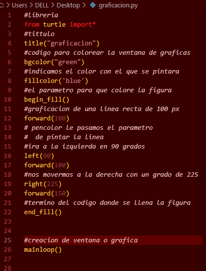

Gráficas Turtle es una forma muy habitual de introducción a la programación para niñas y niños. Era parte original del lenguaje de programación Logo, desarrollado por Wally Feurzeig, Seymour Papert y Cynthia Solomon en 1967. Imagina una tortuga robot que empieza en las coordenadas (0, 0) en un plano x-y. Después de un import turtle, dele el comando turtle.forward(15), y se mueve (¡en la pantalla!) 15 pixeles en la dirección en la que se encuentra, dibujando una línea mientras se mueve. Dele el comando turtle.right(25), y rotará en el lugar, 25 grados, en sentido horario. Turtle star Turtle puede dibujar figuras intrincadas usando programas que repiten movimientos simples. ../_images/turtle-star.png from turtle import * color('red', 'yellow') begin_fill() while True: forward(200) left(170) if abs(pos()) < 1: break end_fill() done() Al combinar estos comandos y otros similares, se pueden dibujar figuras intrincadas y formas. El módulo turtle es una reimplementación extendida del mismo módulo de la distribución estándar Python hasta la versión 2.5. Trata de mantener los méritos del viejo módulo y ser (casi) 100% compatible con él. Esto implica en primer lugar, habilitar al programador que está aprendiendo, el uso de todos los comandos, clases y métodos de forma interactiva cuando usa el módulo desde el IDLE ejecutado con la opción -n. El módulo turtle provee las primitivas gráficas, tanto en orientación procedimental como orientada a objetos. Como usa el módulo tkinter para las gráficas subyacentes, necesita tener instalada una versión de Python con soporte TK. La interface orientada a objetos usa esencialmente clases dos+dos: La clase TurtleScreen define una ventana gráfica como base para las tortugas dibujantes. Su constructor necesita una clase tkinter.Canvas o una a ScrolledCanvas como argumento. Se debe usar cuando turtle es usado como parte de una aplicación. La función Screen() devuelve un objeto singleton de la subclase TurtleScreen. Esta función debe utilizarse cuando turtle se usa como una herramienta independiente para hacer gráficos. Siendo un objeto singleton, no es posible que tenga herencias de su clase. Todos los métodos de TurtleScreen/Screen también existen como funciones. Por ejemplo. como parte de la interface orientada a procedimientos. RawTurtle (alias: RawPen) Define los objetos Turtle con los cuales dibujar con la clase TurtleScreen. Su constructor necesita como argumento un Canvas, ScrolledCanvas o TurtleScreen, así el objeto RawTurtle sabe donde dibujar. Derivada de RawTurtle está la subclase Turtle (alias: Pen), que dibuja en «la» instancia Screen que se crea automáticamente, si no está presente. Todos los métodos de RawTurtle/Turtle también existen como funciones. Por ejemplo, como parte de la interface orientada a procedimientos. La interface procedimental provee funciones que son derivadas de los métodos de las clases Screen y Turtle. Tienen los mismos nombres que los métodos correspondientes. Un objeto Screen es creado automáticamente cada vez que una función derivada de un método Screen es llamado. Un objeto Turtle (innombrado) se crea automáticamente cada vez que se llama a una función derivada de un método Turtle. Para usar varias tortugas en una pantalla se tiene que usar la interface orientada a objetos.
En este ejemplo procederemos a importar la lobreria, a poner un titulo y a dibujar o gra ficar, pintando las lineas ´y poniendo el codigo para hacer visible la vetana grafica
